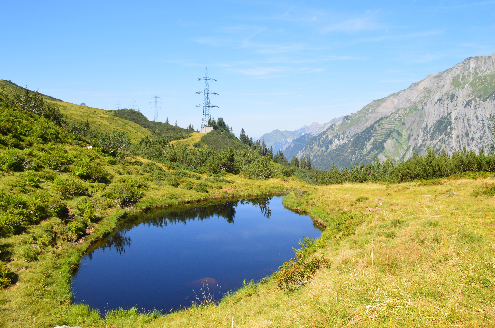
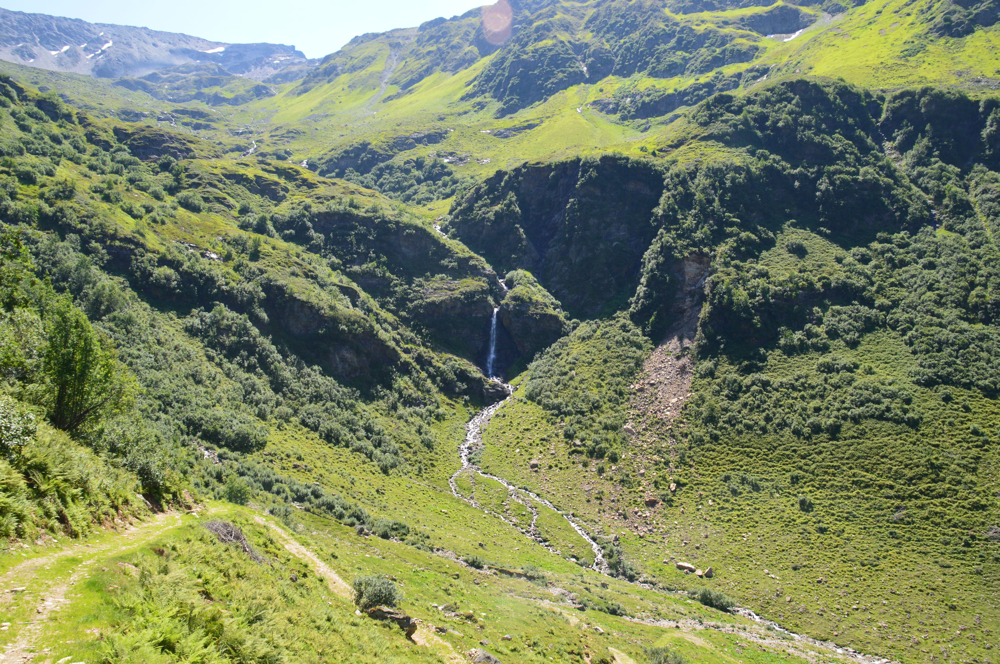
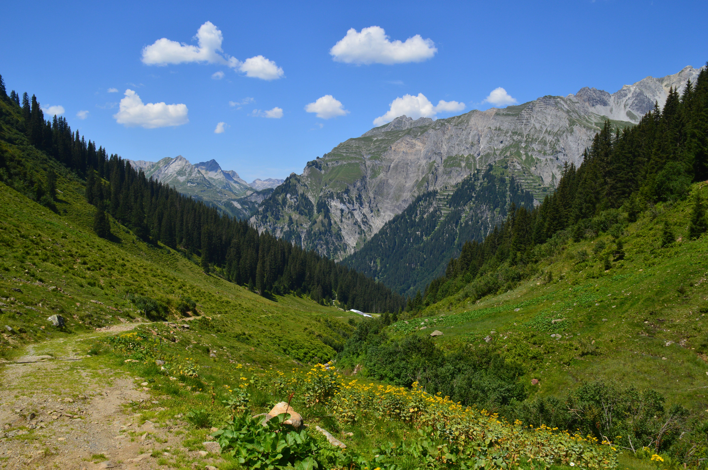

Österreich
Auszeit in den Bergen
Für Tag 5 hatten wir die größte Wanderung eingeplant, weshalb wir schon früh morgens, noch im Schatten der Büsche, die Erste Etappe machen konnten. Die Tour sollte uns auf einen der Berge hochführen, um dort an der „Kaltenberhütte“ auf 2100m unser Ziel zu erreichen, doch schon nach kurzer Zeit merkten wir, dass auch dieser Tag wieder ein sehr warmer werden sollte. Innerhalb weniger Minuten waren die Schatten bereits verschwunden und wir wussten, dass wir sie auch so schnell nicht wieder zu Gesicht bekommen sollten.
Vor allem im ersten Drittel schafften wir viele Höhenmeter, was dazu führte, dass uns nicht nur recht warm, sondern auch bereits die erste Erschöpfung zu merken war. Nach ein paar Blicken auf unsere Karten, fanden wir heraus, dass wir irgendwann auf den ersten Bergfluss treffen sollten, was dann auch endlich geschah. Sichtlich angestrengt kamen wir an dem Fluss an und entschieden uns zu unserer ersten richtigen Pause, in der wir nicht nur das kalte Wasser genossen, sondern auch eine unserer Flaschen auffüllten. Zumindest ein wenig abgekühlt machten wir uns wieder auf den Weg, wobei wir unsere erste Entscheidung treffen mussten, ob wir nun rechts oder linksherum laufen sollten. Wir hatten zwar eine Karte, doch diese zeigte keinen Maßstabsgetreuen Weg an, sondern nur eine recht frei verlaufende Linie.
Da diese aber nach unserem Fluss im Endeffekt nach rechts verlief, entschieden wir uns auch für diese Richtung. Ab hier wurde der Weg auch glücklicherweise deutlich einfacher, da wir nun nur noch mit einer zwar dauerhaften aber geringeren Steigung bis nach oben laufen sollten. Unser Weg führte uns über mehrere kleine Bäche und genau Richtung Büsche, da wir mittlerweile an der Baumgrenze angekommen waren. Da wir auf einem vollkommen normalen Wanderweg unterwegs waren und sogar an einem kleinen Bergsee vorbeiliefen, kamen wir gar nicht auf die Idee, dass wir möglicherweise irgendwo falsch abgebogen sind .. sollten dies aber bald merken. Nach dem See gelangten wir an einen Strommast, von dem aber kein deutlicher Weg mehr wegführte, weshalb wir uns für einen „scheinbaren“ Weg durch das Gebüsch entschieden. Es war klar zu erkennen, dass hier schonmal jemand hindurchgelaufen ist und wir liefen auch die ganze Zeit an einem kleinen Bach entlang, wobei sich der „Weg“ immer schlechter entwickelte. Von Meter zu Meter bemerkten wir, dass hier zwar schon einmal jemand langlief, doch hierbei handelte es sich um eine Herde Kühe, denn im Boden erkannten wir mehr und mehr die Hufabdrücke. Nun, wo Kühe entlang liefen, sollte auch irgendwann ein normaler Weg kommen und alles wieder zurückzulaufen, wollten wir auch nicht, weshalb wir den Spuren einfach weiter folgten. Tatsächlich trafen wir aus heiterem Himmel auf einen hölzernen Steg, mitten im Gebüsch, und da wussten wir .. wir sind wieder richtig. Nach kurzer Orientierung fanden wir auch die korrekte Richtung um endlich wieder auf einem normalen Weg voranzuschreiten. Wir durchquerten weitere Bäche und Flüsse und gelangten auf offenes Gelände. Ab hier wuchsen nicht einmal mehr die größeren Büsche und wir waren der Sonne komplett ausgesetzt. Nach einer kurzen Zeit konnten wir aber auch endlich unser Ziel sehen, die Kaltenberghütte.
Wir sammelten unsere letzten Kraftreserven und erreichten gegen Mittag die Hütte, um dort auch endlich eine große Pause einzulegen. Nach ein paar Minuten und mehreren Fotos, machten wir uns aber auch schon wieder auf den Weg nach unten, auf den wir uns auch schon wirklich freuten, da es nun mal „nur“ noch bergab ging. Es war fast schon erholsam abwärts zu laufen und dabei dem Schatten der Bäume immer näherzukommen. Recht schnell erreichten wir ein Tal, in dem sowohl ein Wasserfall das Tal beendete, als auch erst vor kurzem ein kleiner Erdrutsch stattgefunden haben muss, da die Steine auch noch mitten auf den Wegen und der Bergstraße vorzufinden waren. Auch hier genossen wir den Ausblick und folgten dem Weg über die Bäche den Berg hinunter. Wir wussten zwar nicht, wie lange wir noch für den Abstieg benötigen würden, aber solange es Bergab ging, waren wir zufrieden. Nachdem unsere Wanderwege sich immer mehr zu einer Straße entwickelten, konnten wir auch schon bald das Nachbartal mit dem dazugehörigen Bahnhof entdecken. Dieser Bahnhof bedeutete, dass sich unsere Wanderung dem Ende neigte, da wir dort nur noch flussaufwärts dem Talfluss folgen mussten. Nach wenigen Minuten befanden wir uns wieder auf der Strecke der Talwanderung vom dritten Tag und konnten ohne viel Anstrengung bis zu unserer Wohnung laufen. Dort angekommen wussten wir aber auch, dass wir nur noch unter die Dusche und uns entspannen wollten. Als Fazit müssen wir sagen, dass die Wanderung wirklich viel Spaß gemacht hat und wir einen unglaublichen Überblick über die Täler und Berge hatten, doch haben wir die Tour auch ein wenig unterschätzt.
Unser vorletzter Tag sollte wieder mit viel Sonnenschein durch unsere Fenster beginnen, doch kamen auch schon ein paar Gedanken für die morgige Rückfahrt auf. Nach der langen Wanderung des Vortages wollten wir den heutigen Tag wieder etwas gemütlicher angehen und entschieden uns schon beim Frühstück dafür, beim Trainer vom Bogenschießen anzurufen. Nach einem kurzen Telefonat war dann auch schon der Termin für die Parkour-Reife am Nachmittag fest. Mit viel Vorfreude machten wir uns auf den Weg ohne zu 100% zu wissen, was wir gleich eigentlich machen werden. Nach der Ankunft bekam jeder seine Ausrüstung ink. Pfeile und der Trainer nahm noch für jeden drei extra Pfeile mit (die wir auch noch benötigen sollten). Wir erfuhren, dass wir mit dem Trainer den Parkour gemeinsam machen werden und er unsere Punkte eintragen wird, denn um zu bestehen musste man eine bestimmte Punktzahl erreichen. Der Parkour und das Bogenschießen haben wirklich viel Spaß gemacht und ich würde es sofort wieder machen. Am Ende haben wir sogar die Parkour Reife bestanden und dürften jetzt, theoretisch, andere Parkoure alleine bestreiten. Bisher sind wir zwar leider noch nicht dazu gekommen, doch irgendwann werden wir auch dafür wieder Zeit finden. Mit dem Ende des Bogenschießens ging auch unsere Zeit in Österreich zu Ende, da wir außer einem kleinen Spaziergang und Koffer packen an diesem Tag nichts Weiteres unternommen haben/konnten. Der letzte Tag war recht unspektakulär, da wir uns nur noch auf die Heimreise begeben haben, was bedeutete, geschlagene 12h wieder zurückzufahren, aber wir waren froh und zufrieden über unseren Urlaub in Österreich. Dieser Urlaub war stellenweise zwar körperlich anstrengend, doch das haben wir uns selber ausgesucht. Und um uns herum war einfach so viel Ruhe und Stille, dass wir das wirklich genossen mal nicht zwischen hunderten von Menschen in irgendwelchen Städten unterwegs zu sein. Wir hoffen irgendwann noch einmal nach Stuben zurückkehren zu dürfen.